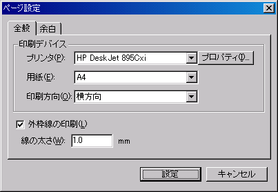
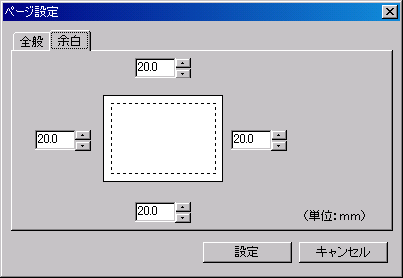
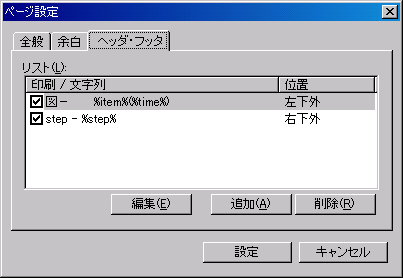
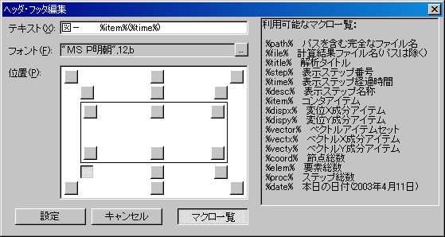

メイン画面メニューの[ファイル]−[ページ設定]を選択すると下画面が表示されます。印刷に関する各種設定を行います。印刷に使用するプリンタの選択や余白、ヘッダ・フッタの設定を行います。
印刷に使用するプリンタと用紙に関する設定を行います。

余白の設定を行います。上・下・左・右の余白サイズを入力します。

ヘッダ・フッタの設定を行います。＜追加＞ボタンをクリックするとヘッダ・フッタの追加を行うことができます。印刷時に適用したいヘッダ・フッタは「印刷／文字列」項目にチェックをします。

- 追加
ヘッダ・フッタを追加します。
- 編集
選択中のヘッダ・フッタを編集します。
- 削除
選択中のヘッダ・フッタを削除します。
＜追加＞ボタンもしくは＜編集＞ボタンをクリックすると、下画面が表示されヘッダ・フッタの追加・編集を行うことができます。

- テキスト
印刷に適用するヘッダ・フッタを入力します。文字列にはマクロを使用することができます。＜マクロ一覧＞ボタンをクリックするとマクロ一覧の表示・非表示を切り換えることができます。
- フォント
フォント種類、サイズ、色を選択します。＜参照＞ボタンをクリックするとフォント指定ダイアログボックスが表示されます。
- 位置
ヘッダ・フッタの表示位置を指定します。